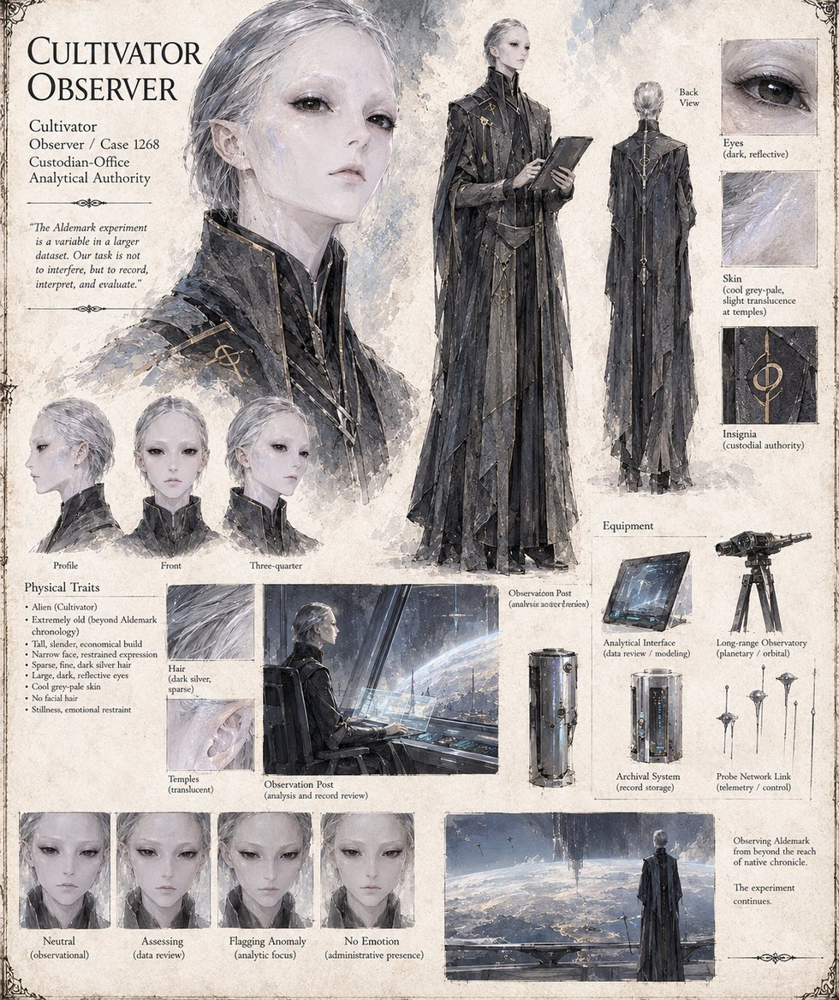

Cultivator Observer
Observer, Case 1,268 · Custodian-Office analytical authority · no Envoy posted in person · extremely old by the sheet
The manuscript assigns the case no Envoy: its header reads None assigned — autonomous network; no Envoy delivers or observes in person. The sheet nevertheless files a Cultivator Observer under Case 1,268, the Custodian Office's analytical authority, and the Archival Log that closes the manuscript speaks throughout as this office. That log sets down the case's reading: that unmediated sight of the planet's true shape was enough, with no doctrine supplied, to produce the same discovery across eleven exposure samples however primed by rumor; that a suppressed cosmology proved a load-bearing variable of theocratic governance; that the tax, the judgment and the oath, which rested on the same institution, collapsed with it; and that the network gave the people nothing but observation, a distinction the office says it does not regard as a loophole.
It also records, and sets aside without comment, that Warden Hraban requested clarification before issuing a single one of his twenty-six years of sanctioned orders and that this variable produced no measurable alteration to outcomes; that the Ardwenist was granted an extended range by a mechanical consequence of an unrevised protocol, with no corrective update filed; and that the dormant designation she asked for recurs, under seal, in at least six earlier case files. Its last line is its status: Terrarium stable. Case closed. Filed. The sheet draws an alien Cultivator, tall, slender and extremely old by Aldemark's chronology, with a narrow face, sparse fine dark-silver hair, large dark reflective eyes, cool grey-pale skin slightly translucent at the temples and no facial hair, in a long dark layered coat with the custodial insignia, holding an analytical tablet; its panels show a long-range observatory, an archival cylinder and a probe-network link, and its expression studies read neutral, assessing, flagging anomaly and no emotion. The pull-quote below is the sheet's own and does not appear in the manuscript.
“The Aldemark experiment is a variable in a larger dataset. Our task is not to interfere, but to record, interpret, and evaluate.”